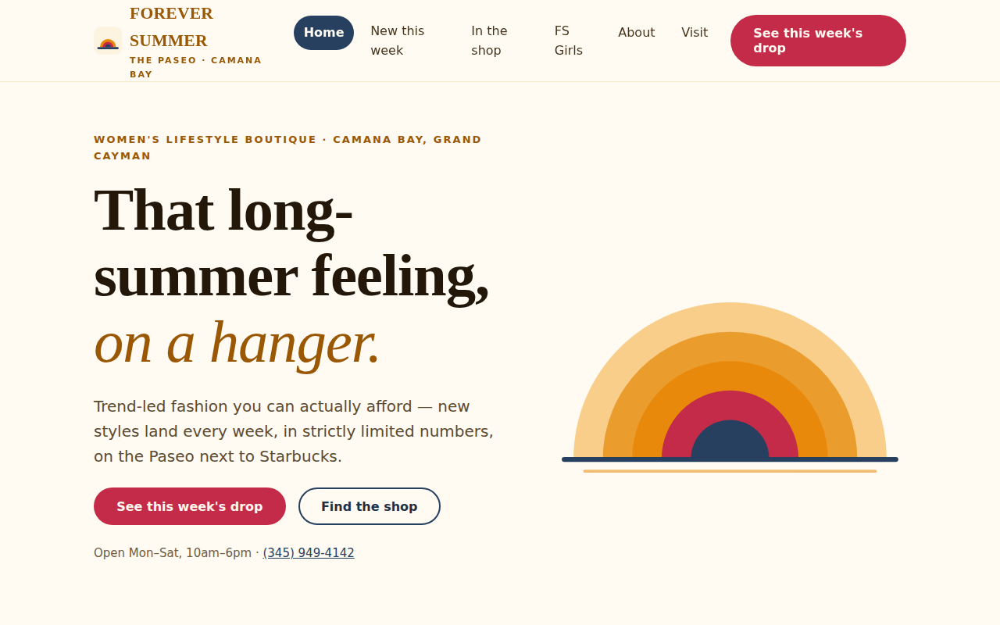
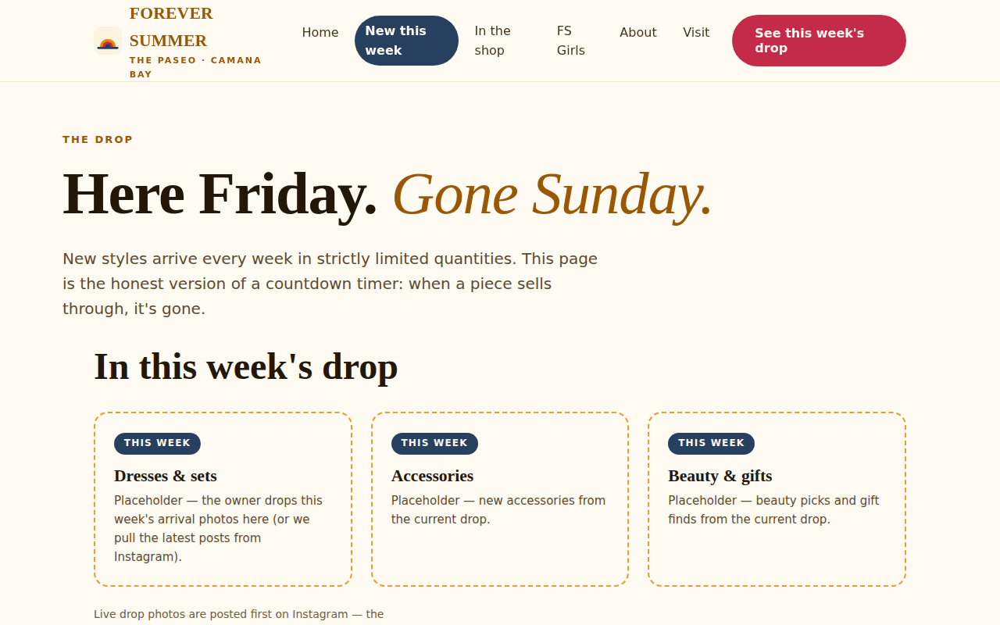
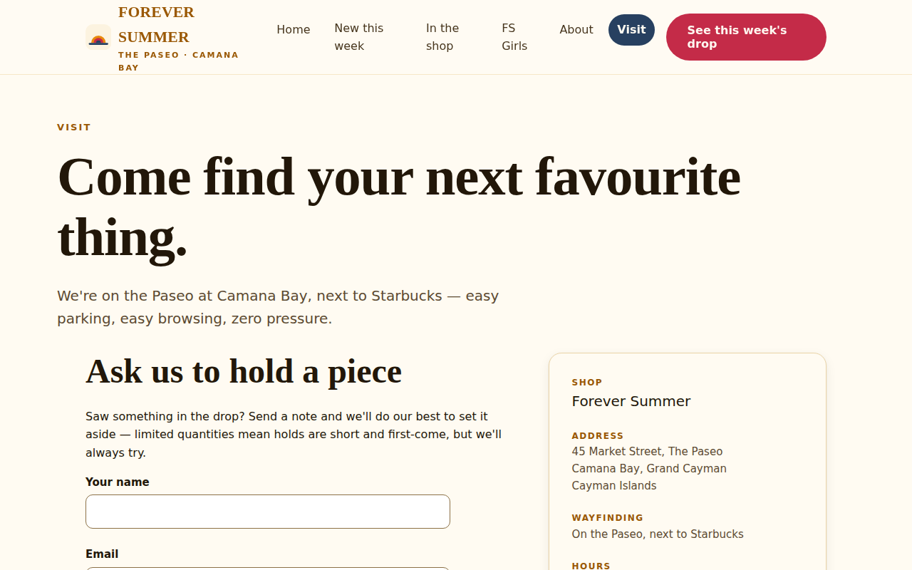
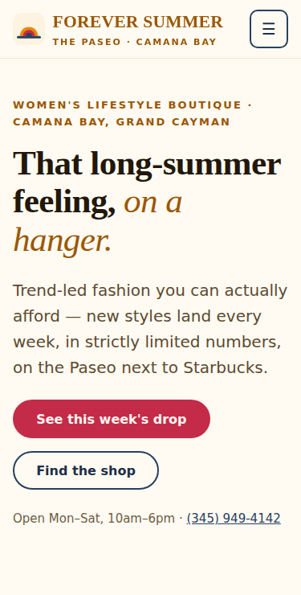

Website redesign · The Paseo, Camana Bay
The shop's whole magic is a weekly drop of new styles. The old website never mentioned it. Here's what we changed, and why.
Where we started
Just a home page and an FS Girls page. No story, nothing to do.
New styles land weekly in small numbers. That only lived on Instagram.
The site said "George Town." Shoppers search for Camana Bay, next to Starbucks.
One review praises the staff. Others complain about the fitting rooms. The site said nothing.
Sources for every finding: the research audit.
Side by side
Sketch based on the audit. One thin page, a bare address line, and no reason to come back next week.

The real new home page. The striped sun, the drop story, and one pink call to action.
A closer look



What changed, and why
A whole page explains the weekly drop and links to Instagram, where it goes live. Why: it's how the shop really buys. Real scarcity beats fake countdowns.
"Try anything. Try it twice. Ask for another size out loud." Why: reviews flagged service. Now the standard is public, next to the staff praise.
"45 Market St, The Paseo, Camana Bay, next to Starbucks." Same words everywhere. Why: "George Town" was hiding the shop from the searches that matter.
The teen line keeps its own page, at pocket-money prices. Why: teens are a core audience. It's also the case for opening TikTok.
The copy owns it: summer fashion you can actually afford. Why: on a pricey island, that's the shop's biggest edge.
The look, and what's next
Catherine opened the shop to capture "long summer days and nights filled with fun and freedom." The sunset colors and the striped sun are that idea, drawn.
Passes accessibility checks on every page, loads as one small file, quick on any phone.
Drop photo spots are labeled placeholders until the shop sends its own weekly shots.
Confirm hours, send the logo and photos, rename the Facebook page to "Forever Summer," claim the Google listing.
Scroll ↓ or use arrow keys